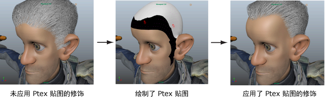

可以创建基于 Ptex 的贴图以遮罩您不需要显示头发或毛发的角色网格区域。按照此示例创建基于 Ptex 的遮罩，以在部分修饰的角色上定义细线。可以使用同一技术创建光秃点。
为头发修饰创建细线
- 在“XGen”工具栏中，清除预览并禁用“自动更新预览”(Update Preview Automatically)。
单击“基本体”(Primitives)选项卡。
在“生成器属性”(Generator Attributes)部分中，单击“遮罩”(Mask)旁边的 ，并从出现的菜单中选择“创建贴图”(Create Map)。
- 在“创建贴图”(Create Map)窗口中，键入贴图的名称，如 mask_Hairline。
- 进行下列设定：
- 将“贴图分辨率”(Map Resolution)设置为 30。
这将逐面设置 Ptex 贴图的 Texel 数。
- “起始颜色”(Start Color)设置为“黑色”(Black)
这会将贴图值设置为 0，将遮罩网格曲面以便不生成样条线。在网格上进行绘制时，使用白色。这会将绘制区域设置为 1，将在曲面上生成样条线。
- 将“贴图分辨率”(Map Resolution)设置为 30。
- 在“工具设置”(Tool Settings)窗口中，设定下列内容：
- 在“Artisan”旁边，选择笔刷。
- 在“颜色”(Color)部分中，单击颜色样例并选择白色。
- 在“绘制操作”(Paint Operations)部分中，将“融合模式”(Blend Mode)设置为“默认”(Default)。
- 在“笔划”(Stroke)部分中，启用“反射”(Reflection)。
- 在“光笔压力”(Stylus Pressure)部分中，关闭“光笔压力”(Stylus Pressure)。
注： 如果“3D 绘制工具”(3D Paint Tool)窗口未出现，单击“工具箱”中的此图标 将其打开。
将其打开。 - 使用“3D 绘制工具”(3D Paint Tool)绘制您需要显示头发的头皮区域。
- 单击此 图标保存 Ptex 贴图。
- 预览描述。 
- （可选）继续修改贴图，方法是单击“遮罩”(Mask)旁边的此图标 ，在网格上绘制，然后单击 保存更改。